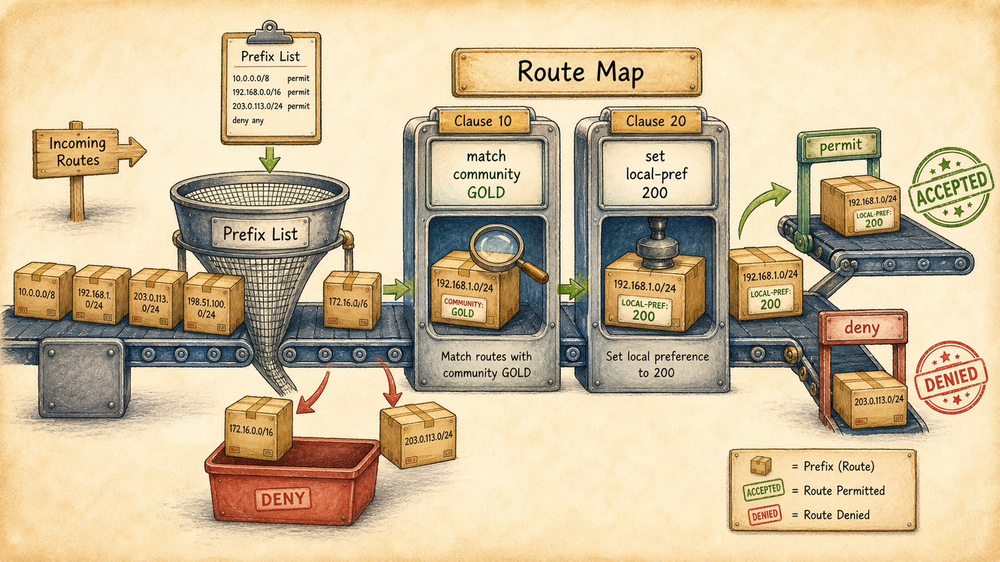

Ready to Begin the Session
| Official NSE7 EF Blueprint Objectives |
|
| Prerequisites | Session 24: iBGP vs eBGP & Route Reflectors |
| Estimated Duration | 30 minutes |
| Phase | Phase 5 — Dynamic Routing: OSPF & BGP |
Session 25 — Route Maps, Prefix Lists & Filters Where we are in the NSE7 journey: Routing protocols learn everything by default. Production routing learns only what we want. The tool that lets us pick is the route map. The problem we're solving today: Almost every BGP-related exam scenario hides a route-map line. Reading them fluently is the difference between a 5-minute question and a wrong answer. Session goal: Read a six-clause route-map and predict the outcome for three sample prefixes. Key concepts: • Prefix lists (exact / le / ge semantics) • AS-path access-lists • Community lists • Route-map permit / deny clauses and the implicit deny • FortiGate `config router route-map` walkthrough
Where We Are in the NSE7 Journey

An illustrated horizontal conveyor-belt scene.
Routing protocols learn everything by default. Production routing learns only what we want. The tool that lets us pick is the route map.
The Problem We're Solving Today
Almost every BGP-related exam scenario hides a route-map line. Reading them fluently is the difference between a 5-minute question and a wrong answer.
Key Concepts
- Prefix lists (exact / le / ge semantics)
- AS-path access-lists
- Community lists
- Route-map permit / deny clauses and the implicit deny
- FortiGate `config router route-map` walkthrough
What We Discovered Together
Parsed from the persistent session summary produced at the end of the Socratic investigation. Use it to rebuild context before a review or a lab.
Session Information
- Session Number25
- TopicRoute Maps, Prefix Lists & Filters (Part 1 — Matching Tools & Route-Map Anatomy)
- DateJuly 2026
- CertificationFortinet NSE7 Enterprise Firewall 7.6 (Domain 4 — Routing)
Story Progress
- SettingVaultline Financial. The FG-EDGE-P/FG-EDGE-DR iBGP+RR mesh from S24 is now conceptually "up" in the narrative. Priya opened with a real complaint: far more is leaking into the IGP than expected, and FG-EDGE-DR has a route learned from ISP-A's peering that "should never happen." The session used that as the forcing function for the entire filtering toolkit. NOTE: the blueprint's stated S25 goal (read a six-clause route-map and predict outcomes for three sample prefixes, plus the `config router route-map` FortiOS walkthrough) was NOT completed this session — the session deliberately stopped after building the conceptual foundation (all three matchers + route-map anatomy). The six-clause exercise and FortiOS syntax are the explicit opener for the next session.
Concepts Learned
Configuration Introduced
None — deliberately. Per the standard flow (configuration only after understanding), FortiOS syntax for prefix-lists, AS-path ACLs, community-lists, and `config router route-map` was explicitly deferred to next session, alongside the six-clause reading exercise. The `set local-preference` inbound route-map was named as a mechanism but not configured.
Student Reasoning Quality
Solid, efficient session — student arrived already knowing the le/ge vocabulary and needed edge-case sharpening rather than introduction. Notable moments:
- Correctly predicted BGP's accept-everything/re-advertise-everything default without hesitation.
- le semantics: correctly reasoned the direction ("base and anything more specific") but needed the boundary pinned — then answered both edge cases correctly (bare /24 matches under le 26; /27 does not).
- ge semantics: gave correct example prefixes (/28, /27, /30, /32 all inside the window) but initially SKIPPED the critical question of whether the bare /24 still matches — answered correctly ("does not match") when re-asked directly. Worth a cold retrieval check next review: "does 10.0.0.0/8 ge 16 match 10.0.0.0/8 itself?"
- Correctly identified that a prefix-list cannot express AS-path policy ("you would need an AS identifier").
- Communities: first answer ("manipulate how routers behave when they see the tag") described the consequence, not the reason; second answer ("write policy based on the label not the prefix") landed the core idea, with the tag-once/match-anywhere-downstream decoupling supplied as the completing insight.
- Implicit deny: instantly predicted it by analogy to firewall policy ("inherit deny at the bottom") — the firewall-policy mental model transferred cleanly.
- Set statements: correctly predicted set fires on a matched permit ("the set statement is activated").
- Self-assessed summary of all three matchers at session end was accurate on all three.
Troubleshooting Experience
No fault-injection lab — concept-building session. Priya's leaked-route complaint served as the framing scenario but was not resolved in-session (the fix requires the FortiOS config deferred to next session). Natural follow-up lab once config exists: "why is this prefix still getting through / why did this prefix disappear" scenarios exercising first-match-wins, the ge-evicts-base trap, and the missing-empty-permit trap.
Connections
- BackwardDirectly continues S24's narrative (RR mesh now up; eBGP-learned routes flowing into iBGP is exactly why the leak reached FG-EDGE-DR). Implicit deny derived by analogy to firewall policy (long-running pattern of reusing security-policy instincts for routing policy). Resolved the final piece of S23's Local Preference cliffhanger: iBGP gave LP somewhere to go (S24), route-maps give LP a way to be set (S25).
- ForwardNEXT SESSION OPENER (promised explicitly): the six-clause route-map reading exercise with three sample prefixes, plus `config router route-map` / prefix-list / as-path-list / community-list FortiOS syntax. BGP regex syntax deferred as its own future rabbit hole. Still outstanding from earlier sessions: BGP timers + config router bgp base skeleton (S23), redistribution OSPF↔BGP at FG-EDGE-P (S22 — note route-maps are the natural redistribution filter, so this thread is now unblocked conceptually), WAN-link area assignments (S21), Marcus's NOC alerting hooks, split-policy architecture (S39/40), VDOM partitioning (S16/18).
Important Takeaways
- BGP's default is trust-and-propagate-everything; every filter is an explicit act of restraint layered on top.
- Prefix-list = a window on prefix length. Bare = exact. le raises the ceiling (base stays). ge raises the floor (base is EVICTED — the trap).
- Three matchers, three attributes: prefix-list → the prefix; AS-path ACL → where the route has been; community-list → the label stamped on it. Communities' real value: tag once at origination, match anywhere downstream — policy decoupled from topology.
- Route-map = match → verdict → modify. First match wins; implicit deny below the last clause; deny-only route-maps block everything; "deny these / allow rest" needs a trailing empty permit.
- A matched permit with a set statement admits AND modifies — this is the mechanism that applies Local Preference, MED, and community stamps.
Guides, Bites & Nibbles
Additional resources sorted to this session — deeper guides, focused explainers, and quick-reference cards.